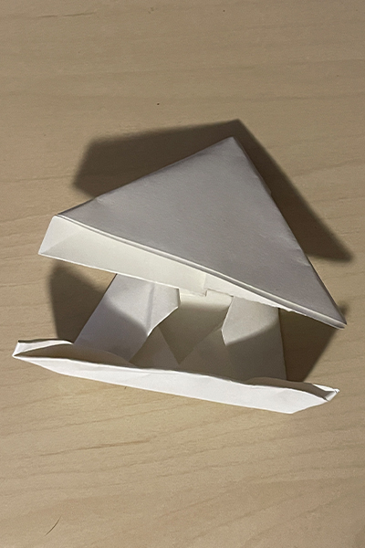
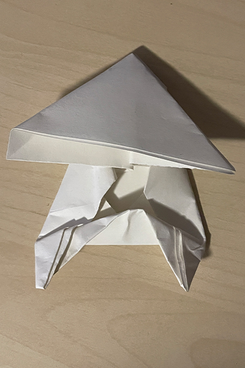
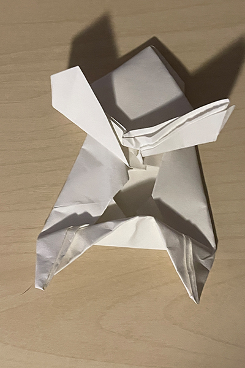
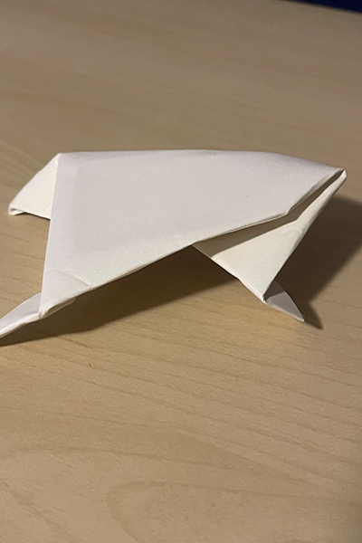
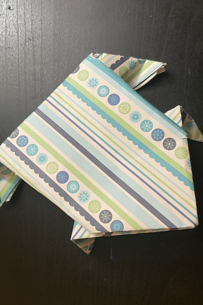
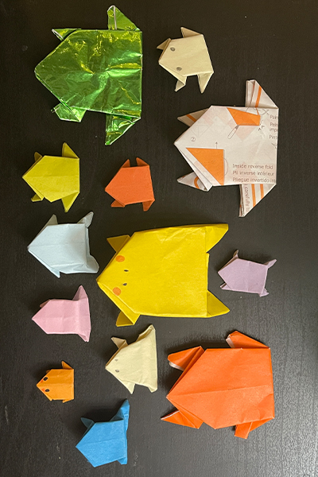

ORIGAMI HUB
Finishing Up!
This is what your frog should look like if you followed all the steps from the previous page.

The next step is to take one of corner edges of the bottom trapazoid, and fold towards you until the corner peeks just a little off the edge. Repeat for the other side.

Now we are doing something similar to the top, take the edge of the bottom part of the triangle. This time, fold away from you until a little triangle peeks off the edge.

If your frog looks like the image above, you can go ahead and flip it over! Tada, you are done!

Now that you have finished this tutorial, consider going through it again with different kinds of paper. You could also decorate your frog if you want to.

< BACK